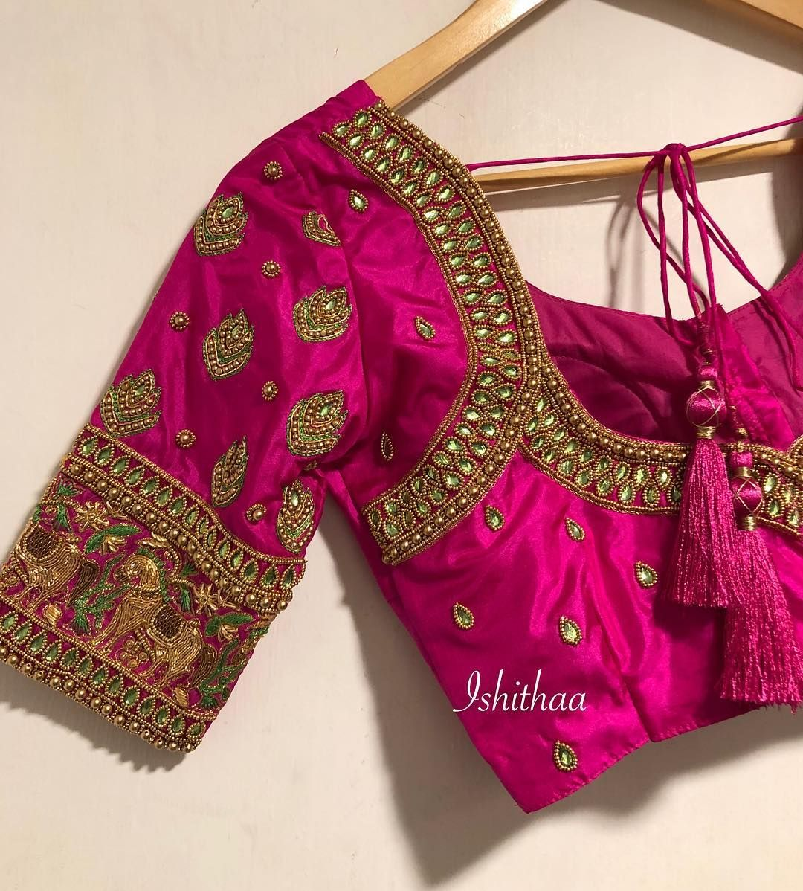
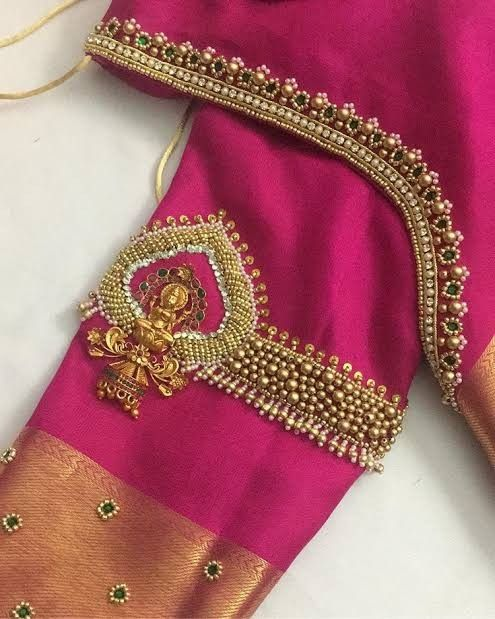
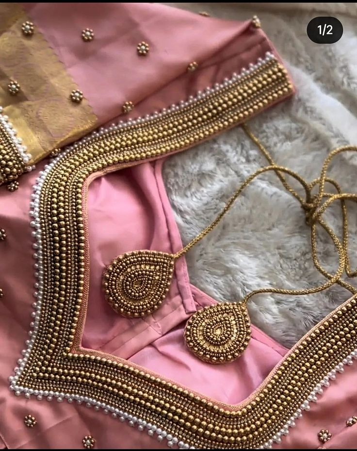
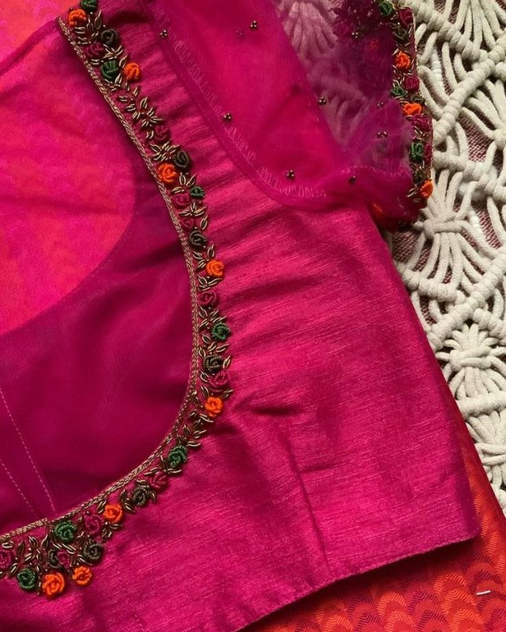
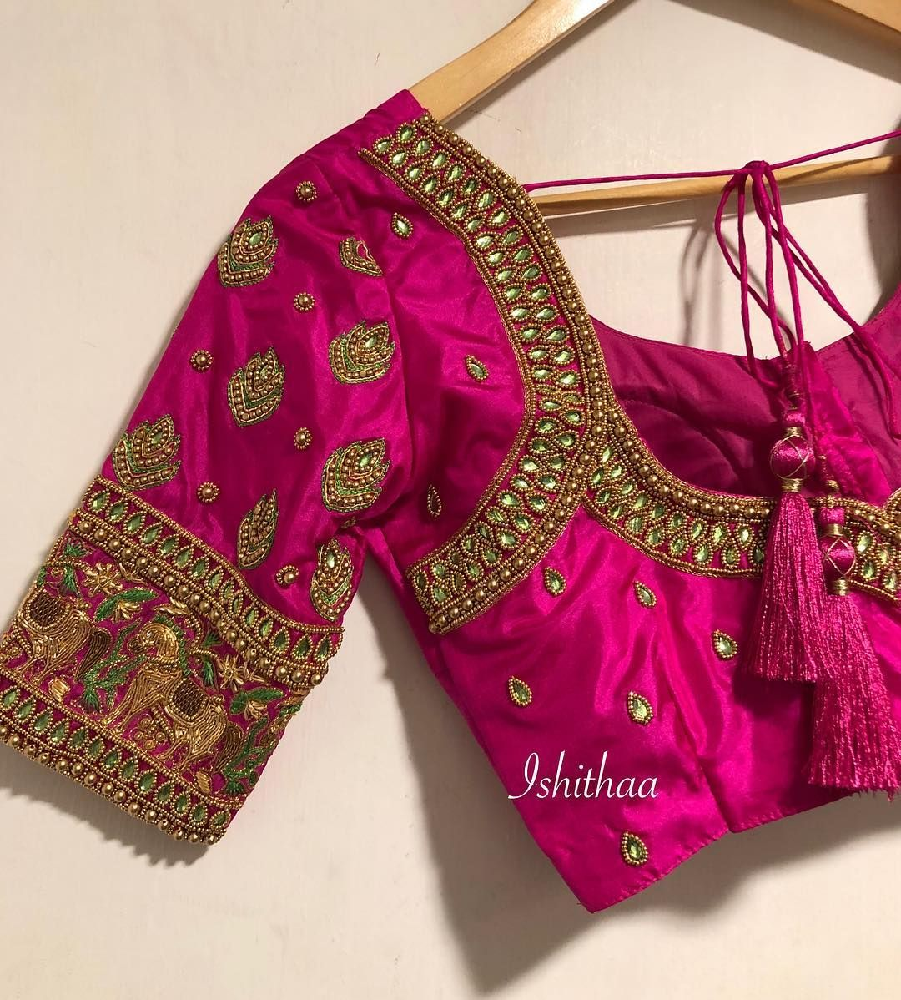
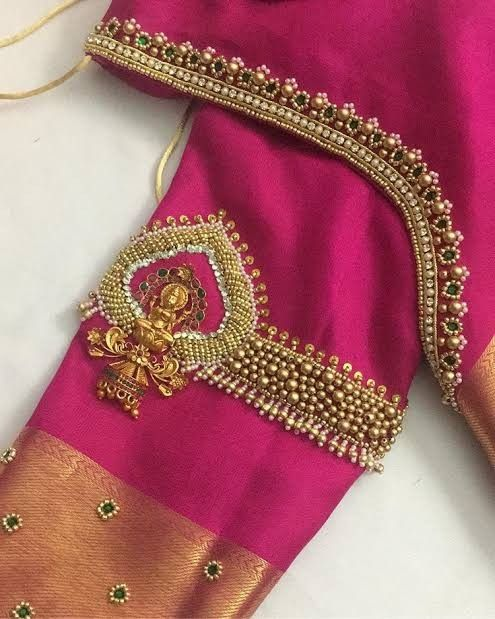
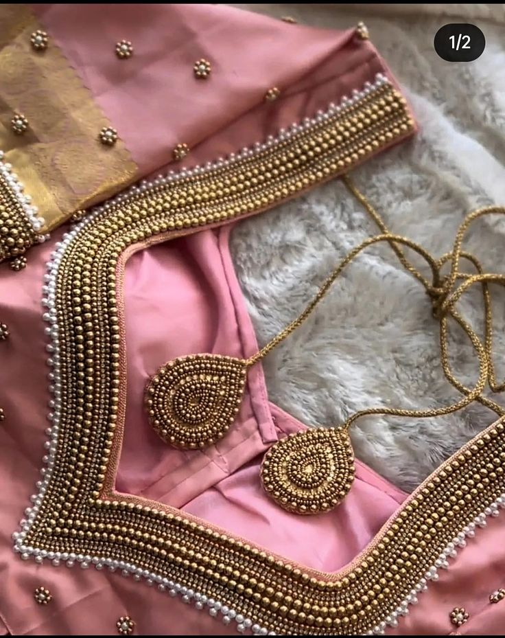
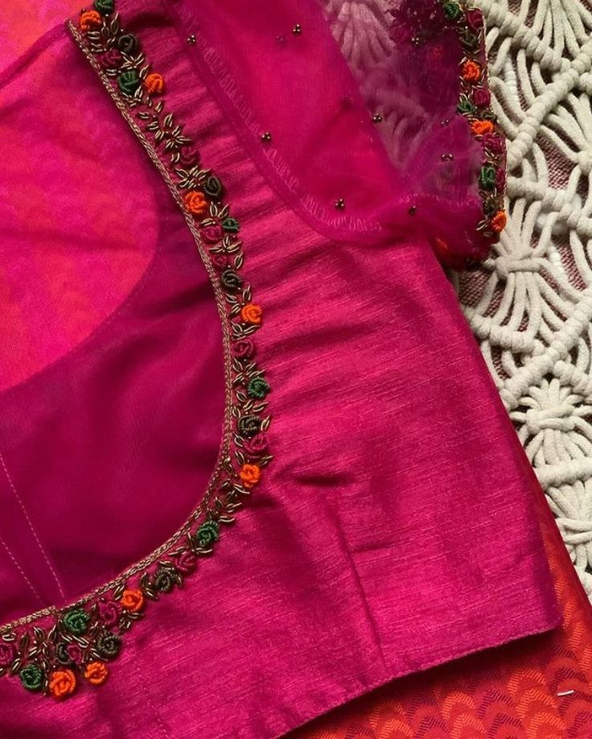

Simple Aari work blouse designs are available in various patterns and designs. Each design is attractive and eye-catching. These designs are made with pearls beads stones etc. These designs look very bright and latest. You can make these designs according to your choice. Aari work designs can be made both simple and gorgeous. Today we are going to discuss some simple Aari work blouses designs. Hope you like it.
Here are the simple Aari work blouse designs. So let’s start with us.
This is a simple and Aari work blouse designs. This blouse has beautiful small flower design on the neck and sleeves.These designs are made very carefully.You can make it in your favorite color. It will look good if you wear a pink or golden color saree with it. You can wear it on any occasion.
Everyone likes flower blouse design and if it is in a Aari work design then there is no problem. It has green and paste color floral designs on the neck and hands. You can wear it with light colored sarees. It will be nice if you wear stylish earrings with it.
Those who like simple Aari work only on blouse neck and sleeves can use this blouse. It is designed in a nice color.You can use dark color saree with it.You can try this blouse for any home occasion.
This is another simple Aari work blouse design. Golden color aari work design in green color looks nice. Golden color dori is added with it. You can wear it with skirts. You can make it very easily. It’s go with gorgeous earrings.
It is a simple line blouse design. Golden color border is given on the lower part of the arms. The lines between the hands are very well designed. The golden color design around the neck looks amazing. It has a stylish dori attached to it.
We hope you will like this 18 Simple Aari Work Blouse Designs. Stay with us. Thanks.